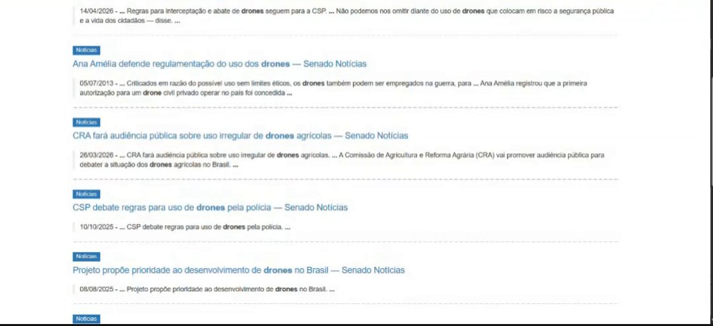

Responsável: Caio Breno de Souza Bezerra — Entrevista e observação
Entrevista e observação¶
Tabela de contribuição¶
A Tabela 1 registra quem atuou neste artefato.
| Integrante | Contribuição | Artefato / atividade |
|---|---|---|
| Caio Breno de Souza Bezerra | Recrutamento e caracterização da participante | Participante |
| Caio Breno de Souza Bezerra | Planejamento da sessão | Planejamento |
| Caio Breno de Souza Bezerra | Roteiro da entrevista | Roteiro |
| Caio Breno de Souza Bezerra | Protocolo de observação | Observação |
| Caio Breno de Souza Bezerra | Síntese da entrevista e registro da observação | Resultados |
| Caio Breno de Souza Bezerra | Atributos da participante para o perfil do usuário | Atributos |
| Caio Breno de Souza Bezerra | Publicação das gravações da entrevista e da observação | Gravações |
Tabela 1 — Contribuição neste artefato.
Fonte: elaboração do Grupo 06 (2026).
Introdução¶
Esta página documenta a sessão de coleta de dados conduzida por Caio Breno com uma pessoa usuária do Portal do Senado Federal. A sessão aplica as duas técnicas de coleta adotadas pelo grupo, a entrevista semiestruturada e a observação da tarefa, e segue os aspectos éticos definidos para a etapa. Os dados coletados alimentam a persona, o cenário e a análise de tarefas desta seção, além do perfil do usuário do grupo.
Participante¶
A Tabela 2 caracteriza a participante sem identificá-la.
| Campo | Registro |
|---|---|
| Perfil de usuário | Estagiária que compila notícias do setor para um anuário. O rótulo prévio, cidadão com consulta pontual, não se confirmou: o uso é recorrente e faz parte do trabalho |
| Descrição | 24 anos, estudante de engenharia na área espacial, estagiária há cerca de seis meses. Com outros estagiários, reúne notícias da área espacial e das forças armadas |
| Tarefa de interesse | Levantar, no período do anuário, notícias e normas do setor no portal, salvar as relevantes e submetê-las à aprovação de outras pessoas do órgão |
| Recrutamento | Por conveniência, na rede de contatos do entrevistador. Há relação pessoal próxima, registrada como limitação nesta página |
| Data, local e duração | 24/09/2026, por videochamada. Entrevista de cerca de 9 minutos e observação de cerca de 3 minutos, no computador pessoal |
Tabela 2 — Caracterização da participante.
Fonte: elaboração do Grupo 06 (2026).
Nome, órgão e cargo exato não são divulgados, porque qualquer um deles permitiria identificar a pessoa (BARBOSA; SILVA, 2010, p. 140).
Limitação conhecida. A participante tem relação pessoal próxima com o entrevistador, o que aumenta o risco de respostas dadas para agradar. Para reduzir esse efeito, o roteiro usa perguntas abertas e neutras, o entrevistador reforça que quem está sendo avaliado é o site, e não a participante (BARBOSA; SILVA, 2010, p. 141), e a observação da tarefa real serve de contraponto ao que for relatado na entrevista (BARBOSA; SILVA, 2010, p. 149).
Planejamento da sessão¶
Definir os objetivos é o primeiro passo de uma coleta de dados, porque são eles que determinam o que coletar e com qual técnica (BARBOSA; SILVA, 2010, p. 133). Os objetivos desta sessão são:
- levantar os atributos da participante para o perfil do usuário do grupo;
- entender por que, quando e como ela procura notícias no Portal do Senado;
- observar a tarefa real no portal, para embasar o cenário e a análise de tarefas;
- identificar dificuldades, contornos e expectativas em relação ao portal.
A Tabela 3 mostra a estrutura da sessão, o que cada parte produz e quanto cada uma durou de fato.
| Parte | Atividade | Duração prevista | Duração real | Alimenta |
|---|---|---|---|---|
| — | Abertura: TCLE e permissão de gravação | 5 min | — | Aspectos éticos |
| 1 | Entrevista semiestruturada | 20 min | cerca de 9 min | Perfil, persona e cenário |
| 2 | Observação da tarefa, com relato em voz alta | 15 min | cerca de 3 min | Cenário, HTA e CTT |
| 3 | Validação da persona com a participante | 10 min | cerca de 3 min | Persona |
Tabela 3 — Estrutura da sessão.
Fonte: elaboração do Grupo 06 (2026).
A validação da persona fica por último para não influenciar as respostas nem o modo como a tarefa é executada. O plano era a participante usar o computador e o navegador do dia a dia; na sessão, feita por videochamada, ela usou o computador pessoal. A sessão foi gravada em vídeo, com autorização, e as gravações estão em Gravações.
Cuidados éticos¶
- O TCLE é apresentado antes da sessão, e a participante e o entrevistador ficam cada um com uma via assinada (BARBOSA; SILVA, 2010, p. 141).
- A permissão para gravar é pedida antes de a gravação começar (BARBOSA; SILVA, 2010, p. 140).
- O primeiro termo previa só a gravação do áudio, sem publicação. Como a sessão foi gravada em vídeo e os vídeos foram publicados, o TCLE foi refeito para esta sessão: o novo termo descreve a gravação em vídeo, a publicação como não listado no YouTube e nesta página, e o risco de a voz ser reconhecida, e dá à participante a opção de recusar a publicação.
- A participante e o entrevistador assinaram o TCLE pelo assinador do gov.br em 25/09/2026, e a participante autorizou a gravação em vídeo e a publicação. A cópia do TCLE assinado publicada aqui tem o nome da participante tarjado, como o próprio termo garante. O arquivo original, com as assinaturas digitais, fica com a participante e com o entrevistador.
- Nenhuma informação interna ou sigilosa do trabalho da participante é coletada.
- Nos vídeos publicados, o trecho em que a participante diz o nome foi retirado e a legenda com o nome foi coberta. Nome, órgão e cargo exato continuam fora do texto.
- A participante pode pular perguntas, pedir pausa ou encerrar a sessão a qualquer momento, sem prejuízo.
- A participante vê como seus dados foram usados antes da publicação, na validação da persona (BARBOSA; SILVA, 2010, p. 140).
Roteiro da entrevista¶
A entrevista é semiestruturada: o roteiro traz perguntas abertas em ordem lógica, e o entrevistador pode aprofundar respostas e mudar a ordem dos tópicos, sem perder o foco nos objetivos (BARBOSA; SILVA, 2010, p. 146). A Tabela 4 apresenta as perguntas e o atributo que cada uma investiga, segundo a lista de Hackos e Redish e de Courage e Baxter citada por Barbosa e Silva (2010, p. 134–135).
| # | Bloco | Pergunta | Atributo investigado |
|---|---|---|---|
| 1 | Sobre você | Qual é a sua faixa de idade e a sua formação? | Dados demográficos; educação |
| 2 | Sobre você | O que você faz no trabalho, de forma geral? Há quanto tempo? | Experiência no cargo |
| 3 | Sobre você | Onde o anuário entra nas suas atividades? Quem mais participa dele? | Tarefas; relacionamentos |
| 4 | Sobre você | De 1 a 5, quanto você se vira sozinha com computador e sites? | Experiência com computadores |
| 5 | Sobre você | Quando aparece um site ou sistema novo, como você reage? Como prefere aprender? | Atitudes; estilo de aprendizado |
| 6 | Site do Senado | Quando foi a última vez que você entrou no site do Senado? Para quê? | Experiência com o produto |
| 7 | Site do Senado | Com que frequência você usa o site? Como costuma chegar a ele? | Frequência de uso; tecnologia |
| 8 | Site do Senado | O que você acha do site? O que mais gosta e o que menos gosta? | Atitudes; opinião sobre o produto |
| 9 | Site do Senado | Quando aparece uma sigla que você não conhece numa notícia, o que você faz? | Conhecimento do domínio; jargão |
| 10 | Anuário | Como funciona o anuário? O que ele reúne, para quem é, de quanto em quanto tempo sai? | Objetivos |
| 11 | Anuário | Que tipo de notícia do Senado interessa para o anuário? | Tarefas |
| 12 | Anuário | Pense na última vez que você buscou notícias do setor no site do Senado: como começou e como terminou? | Tarefa (incidente crítico) |
| 13 | Anuário | Que palavras você usa para buscar? | Idiomas e jargões |
| 14 | Anuário | Como você sabe que já encontrou tudo o que precisava? | Critério de sucesso da tarefa |
| 15 | Anuário | O que você faz com a notícia depois de encontrá-la? | Tarefas; ferramentas |
| 16 | Anuário | Já deixou de achar algo ou desistiu? O que fez então? | Problemas e contornos |
| 17 | Anuário | Se uma notícia importante ficar de fora, o que acontece? | Gravidade dos erros |
| 18 | Fechamento | Se pudesse mudar uma coisa no site para esse trabalho, o que seria? | Necessidades e expectativas |
Tabela 4 — Roteiro da entrevista semiestruturada.
Fonte: elaboração do Grupo 06 (2026), com base em BARBOSA; SILVA (2010, p. 134–135, 146–148).
As perguntas evitam induzir respostas: o roteiro usa "o que você acha de…", e não "você gosta de…" ou "por que tal coisa é ruim", formas que pressupõem a resposta ou levam o entrevistado a dizer o que acha que o entrevistador quer ouvir (BARBOSA; SILVA, 2010, p. 147).
Protocolo de observação¶
Depois da entrevista, a participante executa a tarefa real no portal enquanto o entrevistador observa. A investigação contextual parte da ideia de que boa parte do trabalho não é bem descrita por quem o pratica, e por isso é preciso ver o trabalho acontecer. Nela, o entrevistador atua como aprendiz, e o usuário, como mestre que ensina fazendo e comentando o que faz (BARBOSA; SILVA, 2010, p. 166).
- Preparação: a participante usa o computador e o navegador habituais e começa de uma aba em branco, como começaria sozinha.
- Instrução: "Imagine que você vai começar hoje o levantamento das notícias do Senado sobre o setor aeroespacial deste ano para o anuário. Faça do jeito que você faz normalmente e vá falando em voz alta o que está pensando. Eu não vou ajudar, só observar e anotar."
- Postura do observador: não ajuda nem aponta caminhos. Se ela perguntar algo, a resposta é "Como você faria se eu não estivesse aqui?"; se ficar em silêncio, a pergunta é "O que você está pensando agora?".
- Encerramento: depois de duas ou três notícias registradas, ou em cerca de 10 minutos.
- Registro: para cada passo, o que ela fez, em que tela, o que disse, se hesitou, errou ou voltou, e o horário. Também se anotam o ponto de entrada (buscador, endereço ou favorito), os termos digitados, o uso de filtros e onde as notícias foram registradas.
- Depois da tarefa: "O que foi mais fácil? E o mais difícil?" e "É assim que você faz normalmente?".
Cada passo registrado vira uma operação da HTA e uma tarefa da CTT na análise de tarefas.
Resultados¶
A sessão aconteceu em 24/09/2026, por videochamada. A entrevista durou cerca de 9 minutos e a observação, cerca de 3. A participante usou o computador pessoal; no trabalho, usa o computador do órgão. A permissão para gravar foi pedida e dada antes de a gravação começar. Esse trecho ficou fora do arquivo publicado, que começa com o aviso de que a gravação está em curso. A pergunta 3 do roteiro não foi feita separadamente: a resposta veio junto com a da pergunta 2 (“tem outros estagiários”).
Gravações¶
Categoria no YouTube: não listado. Data: 24/09/2026. O trecho em que a participante diz o nome foi retirado e a legenda com o nome foi coberta. O Vídeo 1 é a entrevista, e o Vídeo 2, a observação.
- Entrevista: https://youtu.be/bxmG_hs1soQ
- Observação: https://youtu.be/c9ibBrYnL_Y
Vídeo 1 — Entrevista semiestruturada
Vídeo 1 — Entrevista semiestruturada.
Fonte: sessão de 24/09/2026.
Vídeo 2 — Observação da tarefa, com relato em voz alta
Vídeo 2 — Observação da tarefa, com relato em voz alta.
Fonte: sessão de 24/09/2026.
Síntese da entrevista¶
Ela se avalia em 4, numa escala de 1 a 5, com computador e sites. Em site novo, explora sozinha. Em aplicativo, software ou sistema, aprende com vídeo ou com uma ferramenta de inteligência artificial. Sigla desconhecida vai para o Google.
A última visita ao portal que ela lembrou foi cerca de duas semanas antes, para notícias do setor. A equipe pesquisa ao longo de todos os meses e alterna o site de semana em semana. Ela entra pelo Google. O anuário é um compilado anual das notícias mais relevantes da área espacial e das forças armadas, público no site do órgão, para quem se interessa pelo tema. No Senado, o que interessa são as legislações que saem no setor e as inclinações que o setor está tomando.
Há dois caminhos. Para o conjunto das notícias, o menu leva a Senado Notícias. Para um tema, a lupa recebe a palavra-chave. As palavras são do próprio setor: aeroespacial, aeronáutico, drone, foguete, avião, caça, jato e nomes de empresas. Ela não tem como confirmar que achou tudo: define um período e deixa de lado o que é antigo demais. A notícia encontrada é salva e não entra direto no anuário. Passa por análise e aprovação de outras pessoas do órgão e, se for relevante, é editada. Se o período não rende, ela busca em outro site ou encerra. Notícia importante que escapa costuma chegar por outro veículo ou por rede social.
Ela gosta do visual do portal e das opções de acessibilidade na entrada. Mudaria duas coisas. A abertura mostra assunto demais, e ela quer um menu direto com os links de que precisa. A lista de resultados vem amontoada, “sem ordem nem cronológica nem de tema”, e ela quer das notícias mais recentes para as mais antigas.
Registro da observação¶
A instrução foi fazer o levantamento do ano, em voz alta, sem ajuda. A Tabela 5 registra os passos. Os tempos são os da gravação.
| # | O que ela fez | Onde | O que ela disse | Hesitou, errou ou voltou? | Tempo |
|---|---|---|---|---|---|
| 1 | Pesquisou “Senado Federal” | O primeiro link é o caminho de sempre. Senado Notícias aparece em seguida, mas não é o que ela costuma abrir | Não | 0:33 | |
| 2 | Abriu o primeiro resultado | Portal do Senado | — | Não | 0:53 |
| 3 | Acionou a lupa e digitou “drone”, como exemplo do dia | Busca do portal | Escolhe a palavra-chave do dia | Não | 1:00 |
| 4 | Mostrou as abas Tudo, Notícias, Proposições, Pronunciamentos, Legislação e Vídeos | Resultados de “drone” | Dá para filtrar por tipo | Não | 1:10 |
| 5 | Abriu Legislação e viu normas de 2026 | Resultados, aba Legislação | — | Não | 1:18 |
| 6 | Passou para Notícias e percorreu a lista | Resultados, aba Notícias | A lista não está em ordem cronológica: itens de 2026 e, no meio, um de 2013 | Apontou a ordem como falha. Não usou “Classificar por” nem filtro de data, embora os dois estivessem na tela | 1:32 |
| 7 | Encerrou sem salvar notícia | Mesma lista | Chegar às notícias é fácil. O difícil é a ordem das publicações. Hoje só mudou o computador | A tarefa parou na triagem visual | 1:57 |
Tabela 5 — Registro da observação.
Fonte: elaboração do Grupo 06 (2026), a partir da sessão de 24/09/2026.
A Figura 1 mostra o trecho em que a ordem deixa de ser cronológica. A captura foi recortada para ficar só a lista do portal.
{kind=link}

Fonte: SENADO FEDERAL (2026), captura da sessão de observação.
Na Figura 1, o item de 05/07/2013 aparece entre um item de 14/04/2026 e outro de 26/03/2026. Abaixo vêm 10/10/2025 e 08/08/2025. É a falha que ela trata no olho.
Limitações da coleta¶
- A relação pessoal próxima permanece, como já registrado nesta página. A observação confirma o caminho que ela descreveu: Google, primeiro resultado, lupa, aba de tipo e triagem visual.
- A sessão foi remota e no computador pessoal, não no ambiente de trabalho.
- A observação durou cerca de 3 minutos e parou antes de salvar notícia. Salvar, aprovar e editar o anuário vêm da entrevista, não da observação.
- O controle “Classificar por” estava visível e não foi usado. Não dá para afirmar que ela o procurou e não achou. O que ela fez foi filtrar a data no olho.
- Por ser uma sessão remota, a observação não é um estudo de campo no sentido do livro, em que o pesquisador vai ao ambiente do usuário (BARBOSA; SILVA, 2010, p. 164). Foi uma observação remota da tarefa, com a tela compartilhada e o relato em voz alta.
- Os dados vêm de uma só participante. A persona e a análise de tarefas herdam as particularidades dela (BARBOSA; SILVA, 2010, p. 178).
Atributos para o perfil do usuário¶
A Tabela 6 organiza o que a sessão revelou segundo os tipos de dados de Hackos e Redish e de Courage e Baxter, citados por Barbosa e Silva (2010, p. 134–135), e segundo os grupos de atributos do perfil (p. 175). Serve de insumo para o perfil do usuário do grupo.
| Atributo | Participante | Origem |
|---|---|---|
| Dados demográficos | Mulher, 24 anos | Pergunta 1 |
| Experiência no cargo | Estagiária há cerca de seis meses, com outros estagiários. Responsável, com eles, pelo compilado de notícias do anuário | Pergunta 2 |
| Informações sobre a empresa | Secretaria de um órgão público federal. Tamanho não informado | Pergunta 2 |
| Educação | Graduação em andamento, engenharia na área espacial | Pergunta 1 |
| Experiência com computadores | Autoavaliação 4, numa escala de 1 a 5 | Pergunta 4 |
| Experiência com o produto | Uso recorrente e de trabalho. Última visita cerca de duas semanas antes. Chega pelo Google | Perguntas 6 e 7 |
| Tecnologia disponível | Computador do órgão no trabalho; computador pessoal na sessão | Observação |
| Treinamento e aprendizado | Em site novo, explora sozinha. Em sistema novo, usa vídeo ou IA | Pergunta 5 |
| Atitudes e valores | Gosta do visual e das opções de acessibilidade. Não gosta do excesso de assuntos na abertura nem da lista fora de ordem | Pergunta 8 |
| Conhecimento do domínio | Conhece bem o setor aeroespacial. Descreveu-se como leiga em legislação do Senado | Perguntas 9 e 13; fechamento |
| Objetivos | Reunir, ao longo do ano, as notícias relevantes do setor para o anuário | Perguntas 10 e 11 |
| Tarefas | Levantar notícias e normas por palavra-chave, descartar as antigas e salvar as relevantes para aprovação | Perguntas 12 e 15; observação |
| Gravidade dos erros | Baixa a média: notícia importante que escapa costuma chegar por outro veículo ou rede social | Pergunta 17 |
| Idiomas e jargões | Vocabulário do setor: aeroespacial, aeronáutico, drone, foguete, avião, caça, jato, nomes de empresas. Sigla desconhecida vai para o Google | Perguntas 9 e 13 |
| Grupo: idade | Jovem adulta | — |
| Grupo: experiência | Especialista no domínio; usuária frequente do portal, sem uso dos controles de ordenação | — |
| Grupo: atitude | Tecnófila: explora sozinha e recorre a vídeo ou IA | — |
| Grupo: tarefa primária | Levantar notícias do setor por tema e período | — |
Tabela 6 — Atributos da participante para o perfil do usuário.
Fonte: elaboração do Grupo 06 (2026), a partir da sessão de 24/09/2026; categorias de BARBOSA; SILVA (2010, p. 134–135, 175).
A persona, o cenário e a análise de tarefas usam este registro. A participante validou a persona no mesmo dia, sem pedir correção. O registro está em Validação.
Agradecimentos¶
Esta página contou com o apoio de ferramenta de inteligência artificial generativa na estruturação, na redação preliminar, na transcrição do áudio da sessão e na formatação Markdown. A revisão do conteúdo, a conferência das referências no livro e a coleta de dados com a participante são do autor, que segue responsável pelo que está publicado.
Histórico de versão¶
| Versão | Data | Descrição | Autor(es) | Revisor(es) |
|---|---|---|---|---|
0.1 |
21/09/2026 | Caracterização da participante, planejamento da sessão, roteiro da entrevista e protocolo de observação | Caio Breno de Souza Bezerra | A definir |
0.2 |
24/09/2026 | Resultados da entrevista e da observação, com correção do perfil prévio | Caio Breno de Souza Bezerra | A definir |
0.3 |
24/09/2026 | Gravações da entrevista e da observação publicadas na página | Caio Breno de Souza Bezerra | A definir |
0.4 |
24/09/2026 | Aponta a validação da persona, feita no mesmo dia | Caio Breno de Souza Bezerra | A definir |
0.5 |
24/09/2026 | Gravações da entrevista e da observação no YouTube, não listadas | Caio Breno de Souza Bezerra | A definir |
Referências¶
[1] BARBOSA, Simone Diniz Junqueira; SILVA, Bruno Santana da. Interação humano-computador. Rio de Janeiro: Elsevier, 2010.
[2] SENADO FEDERAL. Portal do Senado Federal. Disponível em: https://www12.senado.leg.br/. Acesso em: 24 set. 2026.